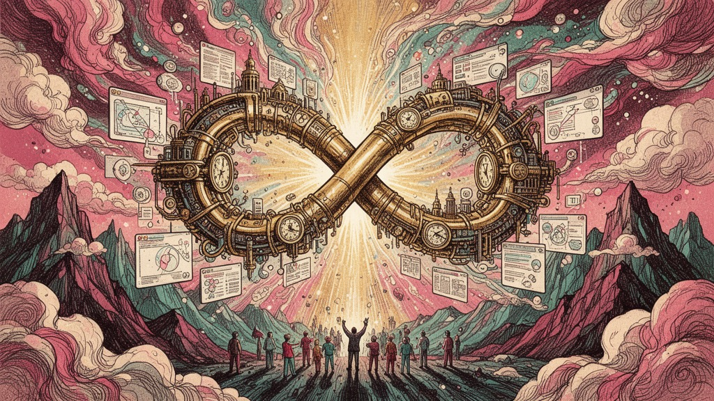

設計の原本(JSON)を、編集可能な本物のFigmaノードへ。
AIと人が互いに刺激しあうための、母艦。
Claude Code に話しかけると、編集できる"本物のFigmaデザイン"が生まれる。
画像の貼り付けではない。テキストもオートレイアウトも、そのままFigmaで続きを描ける。
Pro / Max のサブスク。設計を翻訳する頭脳。API課金は不要。
生成先。無料プランでOK。ここに本物のレイヤーが建つ。
依存ゼロの中継を動かすだけ。node relay.js
「3プランの料金表を作って」と頼むと、Figmaに本物のレイヤーが建つ。
フレーム・テキスト・オートレイアウト・角丸・グラデ・日本語フォント・影・SVGロゴ。画像の貼り付けではない。
ヘッダーの「サンプル生成」を押すだけ。relay なしでも、その場で動作を確認できる。
参照画像を重ねて、余白・フォント・位置をピクセル単位で調整。プロの“詰め”を支える。
気に入った型を保存 → ワンクリックで再利用。貯めるほど、次が速くなる。
写真が要る箇所は、Midjourney / DALL·E 用のプロンプトを生成して渡せる。
チャットでの修正が、接続中のFigmaに即反映。「もっと大きく」「色を変えて」もその場で。
別APIキーも追加課金も不要。Claude Code の Pro / Max だけ。EN/JP 対応。
Mothershipは、デザインを mothership.json という一枚の原本として持つ。 Claude Code が"コードを書くのと同じ"でそれを編集し、プラグインが 本物のFigmaノードとして建てる。 SVGの貼り付けではない。テキストもオートレイアウトも、そのまま編集できる。
「料金表を作って」。言葉で依頼すると、claudeが原本を書き、接続中のFigmaにネイティブで生成される。ゼロから手を動かす疲れを消す。
余白・フォント・プロポーション。参照画像を重ねて当て込み、ズレを見て数値で詰める。ここの精度こそが価値。
詰め切ったデザインはライブラリへ。貯めるほど精度が累積し、次の一枚が速くなる。あなただけの設計の蓄積。
あなたの言葉が原本になり、Figmaのレイヤーになる。
フレーム、テキスト、オートレイアウト、角丸、グラデ、日本語フォント、影。 すべてが編集可能なネイティブノードとして生成される。だから強いFigmaユーザーが、そのまま続きを描ける。
原本はただのファイル。だからAIが直接編集できる。MCPは不要、API課金も不要——Claude Code の Pro / Max だけで、チャットからFigmaまで完結する。 そして中心に置くのはAIではなく、原本のJSON。だからAIは交換可能になり、モデルが変わっても資産は残る。relayとプラグインはAIを一切呼ばない、ただの配管とレンダラー。
「生成」はFigmaのAIが担う時代へ。Mothershipの価値は、所有・整える・自動化に移る。
チャットでネイティブ生成。さらに選択画面の構造を読み、レイアウト崩れ・命名・浮いた要素を整える。原本は、あなたが所有するJSON。
デザインを資産にしたい人。デザインシステムをコードで運用する開発寄りデザイナー／チーム。公式AIの生成物を、実装できる形に整えたい人。
Claude も Gemini も次のAIも、頭脳として差し替えられる。「公式AIがつくる」×「Mothershipが整え・自動化する」——共生のレイヤーへ。
パネル内のチャットで依頼。claude -p が原本を編集し、即Figmaに反映される。
studioで参照を当て込み、余白とタイポを数値で詰める。製品の堀。
貯めたパターンをサムネで一覧。ワンクリックでFigmaへ送る。